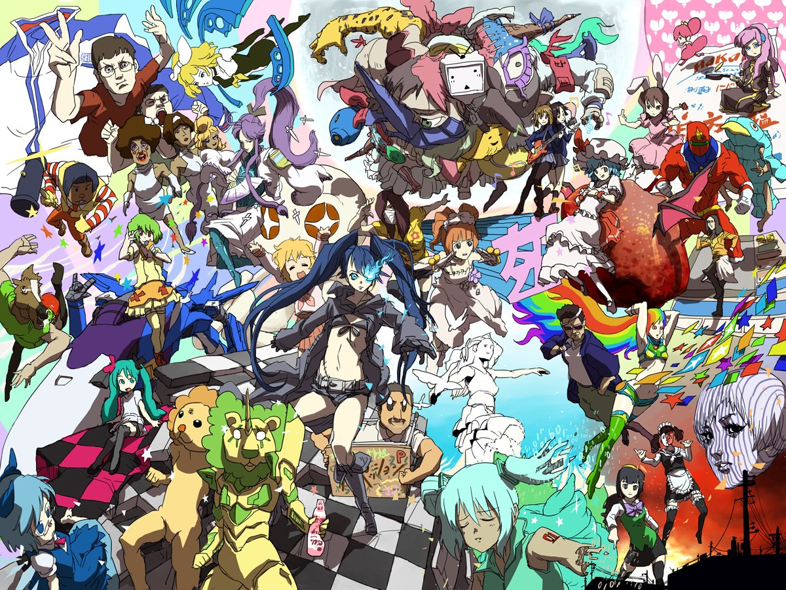
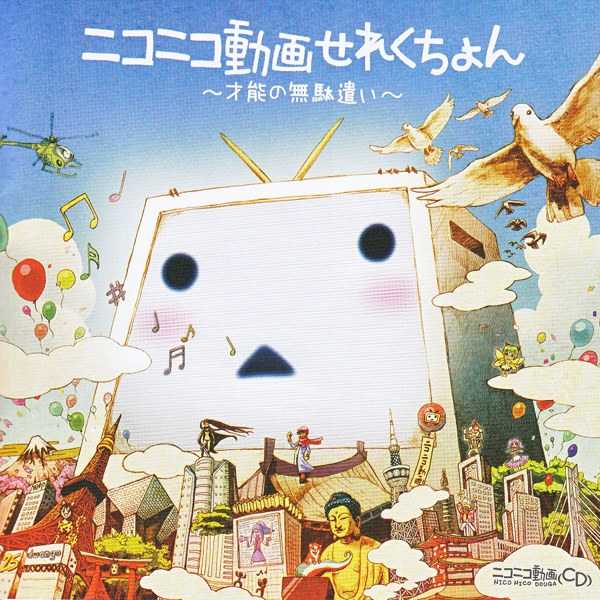

Lesson Ideas
Discussion Questions
What are the differences between this mode of communication and YouTube? What are the similarities? How does anonymous commenting on the web perform as a community?
Cool Media---Nico nico Dōga vs. YouTube
From the website “So what is Nico Nico Douga?”
http://d.hatena.ne.jp/metagold/20080513/1210650303
Nico Nico Douga is a video-sharing platform – a genre that is in the West nowadays predominantly associated with YouTube. Nico Nico Douga was originally created as a mash up of Youtube and 2-channel – the latter is Japan’s most popular BBS (bulletin board system).
The most spectacular innovation of Nico Nico Douga is the way comments are made. Users of Nico Nico Douga can write directly on the moving image. They comment while they watch videos, and add the comments directly on top of the video. All following users can see comments of former users as part of the video (most comments scroll into the frame of the moving image from right to left, and remains visible for some 4 seconds).
Users comment the videos that are streaming in the background, as well as each other’s comments. Sometimes you find only one of two comments scrolling over the video. At other moments the whole screen is full (this is called a “Danmaku”). When the amount of comments on a video exceeds a certain limit, old comments make space for new comments.
NicoNico Douga
*The site (Japanese only)
*use YouTube to find videos posted
search for “niconico”
*What is nico nico douga
http://d.hatena.ne.jp/metagold/20080513/1210650303

Connecting Anonymously



Materials for Teaching
Japanese Visual Culture (K-12)